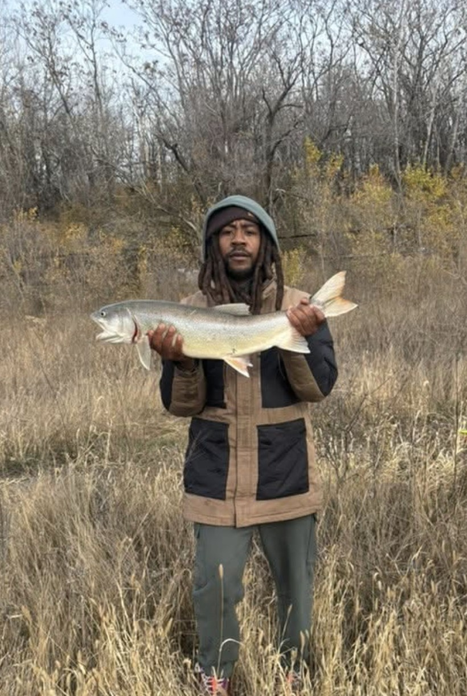

Catch of the Week
A beautiful brown trout caught from the slip on the left.
Welcome to Ken’s Fishing Adventures
Chicago offers one of the most amazing fishing scenes in the Midwest. From the harbors along Lake Michigan to the river slips tucked away in the city, anglers can find action year‑round. Summer brings perch schools close to shore, while fall salmon runs light up the rivers. Winter ice fishing keeps the excitement alive even in the coldest months. Spring opens the season with trout and bass feeding heavily. Beyond the fish, the views of the skyline and lakefront make every trip unforgettable. Whether you’re a seasoned angler or just starting out, Chicago waters always have something special to offer.
Weekly Fishing Report
Perch are biting strong in the harbors, salmon are moving near the river mouths, and catfish remain active in deeper waters. Trout activity has been steady with cooler temps keeping them close to shore.